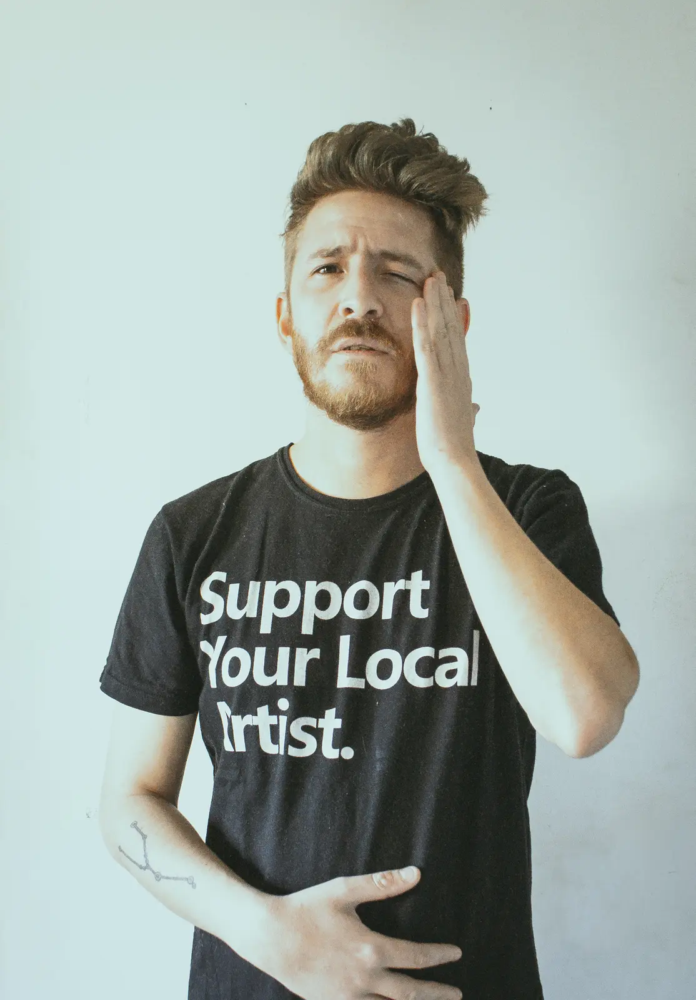
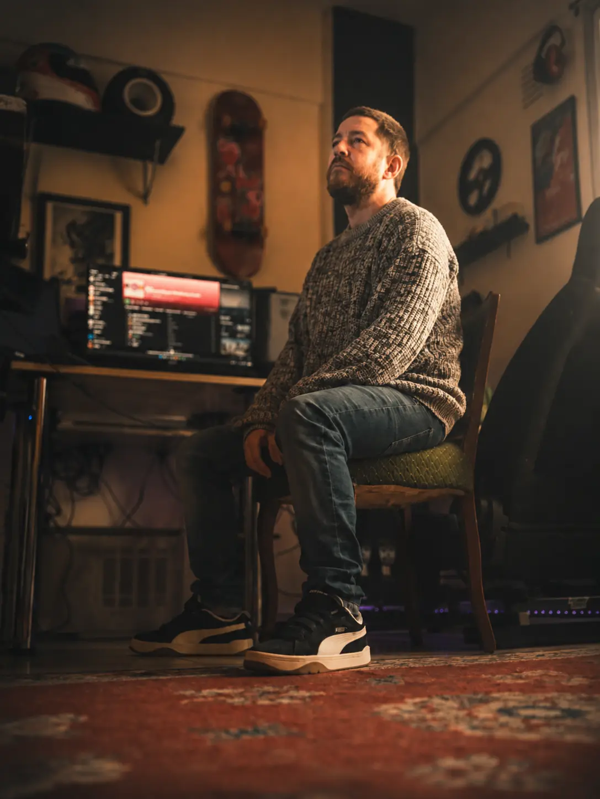

Músico electrónico · Live performer Electronic musician · Live performer
JOTA1988
MUSIC IS PURE VOMIT
FROM THE SOUL.

Música Music
Materia digital.
Pulso orgánico.
Digital grit.
Organic pulse.
Música electrónica construida desde la improvisación, la textura y el choque entre las máquinas y el instinto.
Electronic music built through improvisation, texture and the collision between machines and instinct.

Sobre Jota 1988 About Jota 1988
Toda una vida
basada en la música.
A whole life
based on music.
Empecé a hacer música con un pequeño teclado Casio que era de mi hermano mayor, cuando tenía cuatro o cinco años. Desde entonces todo fue aprendizaje y experimentación, hasta formar mi primera banda a los quince.
Le Pig reunió los dos mundos que me obsesionaban: la música electrónica y el rock alternativo pesado. Ese cruce fue mi primer paso hacia la composición, la producción y, más tarde, el trabajo junto a otros artistas.
Después de la banda me fui metiendo en el downtempo, drum & bass, hip hop y techno. La improvisación y el encuentro entre herramientas analógicas y procesos digitales siguen siendo el centro de mi forma de trabajar.
Desde el techno más digital hasta el downtempo más orgánico, busco que cada track lleve algo real: más allá de la letra y del género, una sensación.
I started making music on my older brother's small Casio keyboard when I was four or five. From there, everything became an experiment in learning, until I formed my first band at fifteen.
Le Pig brought together the two worlds that obsessed me: electronic music and heavy alternative rock. That collision became my first step into composition and production, and later into working with other artists.
After the band ended, I moved deeper into downtempo, drum & bass, hip hop and techno. Improvisation, analog tools and digital processes remain at the center of how I work.
From the most digital techno to the most organic downtempo, I want every track to carry something real — beyond lyrics, beyond genre: a feeling.
Fechas · Colaboraciones · Producción Bookings · Collaborations · Production